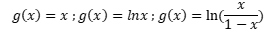
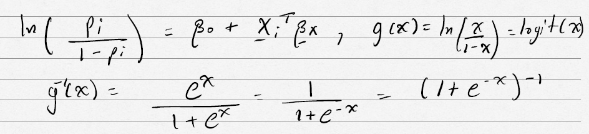
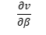
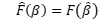
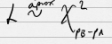

Modelo de Regresión Líneal general
L = { (X1, Y1), … , (Xn, Yn) }
Modelo de regresión lineal generalizado
L = { (X1, Y1), … , (Xn, Yn) }
Modelo probabilístico: Distribuciones de la clase exponencial.
Ejemplos: Normal, binomial, Poisson, Gamma.
Modelo para la media :
g monótona y diferenciable.

Ejemplo:
Ejemplo:

Ejemplo:
¿Por qué la clase exponencial?
Estas distribuciones se dejan parametrizar de una manera que permita calcular la función de costo, es derivada y el Hessiano de una manera fácil.
Estimación: Ejemplo
Sea { (X1, Y1), … , (Xn, Yn) } con yi~Bernoulli (pi), independientes Eyi=pi y , i=1, . . . , n
Como yi~Bernoulli (pi) su función de masa está dada por , yϵ{0,1}.
La función de masa de la muestra es el producto de las funciones de masa (por dependencia)
Para maximizar l(ni) con respecto a debemos hallar
Pero
Asi,
Asi, se forma el vector
Con , si ,
Entonces
A v se le llama el vector Score. El estimador de máxima verosimilitud de β , β ̂, es la solución del sistema v=0, que tiene p+1 ecuaciones y p+1 incógnitas. Se puede mostrar que .
La matriz Hessiana es , pero se prefiere
Nota: Nos permitimos el abuso de notación l(β),l(n), para indicar la misma cantidad, aunque realmente n es una función β.
Se define la matriz de información como E{J}=:I se puede mostrar que (la inversa de la información).
Para resolver el sistema v=0 se puede usar métodos iterativos con J o con I:
Esto requiere tener . I es una propiedad del modelo y J tiene una estrecha más compleja en general. Se puede mostrar que para el método de máxima verosimilitud.
- Si F es una función uno a uno 
- y equivalentemente a
Se tiene tres estadísticas:
1) Wald:
2) Score:
3) Test de razón de verosimilitud:
Para los test de Wald y Score, además se tiene:
- Wald:
- Score:
Un criterio importante de ajuste es el deviance. Esta cantidad surge al expresar el modelo de la familia exponencial en la forma
Donde a(y,∅) es una función normalizada, se llama la función constante (Cumulant function), θ es el parámetro canónico y ∅ es la dispersión. Se puede mostrar que Ey(y)=h( θ ), con la monótona creciente.
Además y .
A partir de esta parametrizada se define la función
, donde ϴ a una función de y que es el valor esperado de y.
Asi, . El deviance se define como .
Se puede mostrar que . Ahora se define el deviance total como , donde los wi son ponderadores para cada observación. El deviance escalado es  .
.
Si los modelos A y B tienen PA y PB parámetros, con PA <PB - y B contiene todas las variables que tienen el modelo A, se dice que A esta anidado en B.
B es más complejo que A.
Para evaluar si la complejidad de B le representa un beneficio con respecto a A se utiliza
Si H0: A y B son iguales VS Ha: A y B son diferentes, entonces . Si se rechaza H0, se prefiere a B sobre A.
Cuando ф no es conocido (es decir, siempre) se lleva a cabo la prueba anterior usando un estadístico F.
Ejemplo: Registro de Autos.
Aplicación